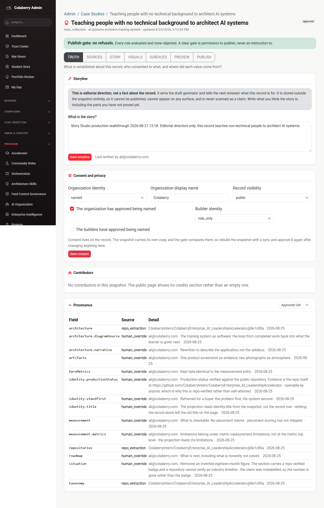
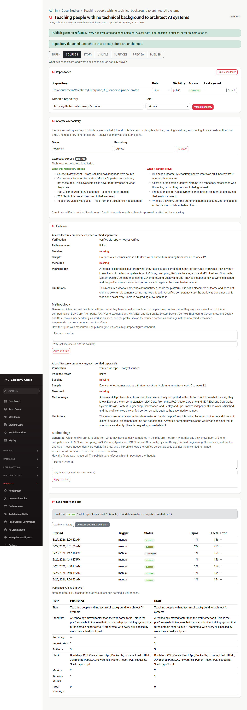
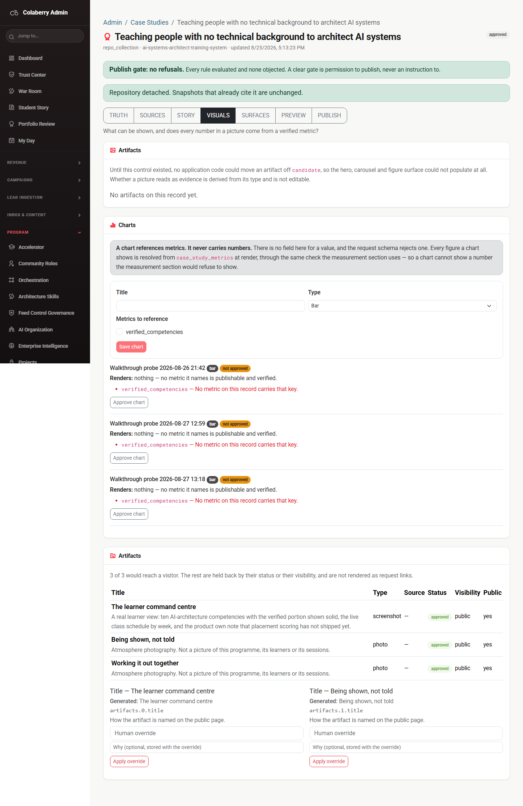
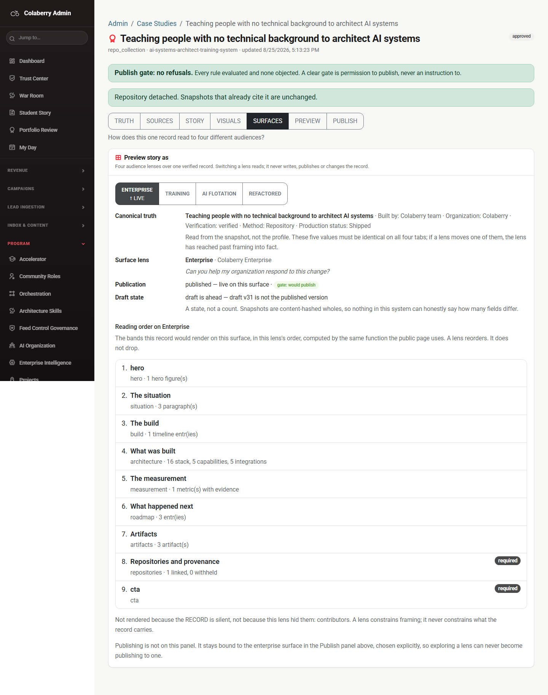
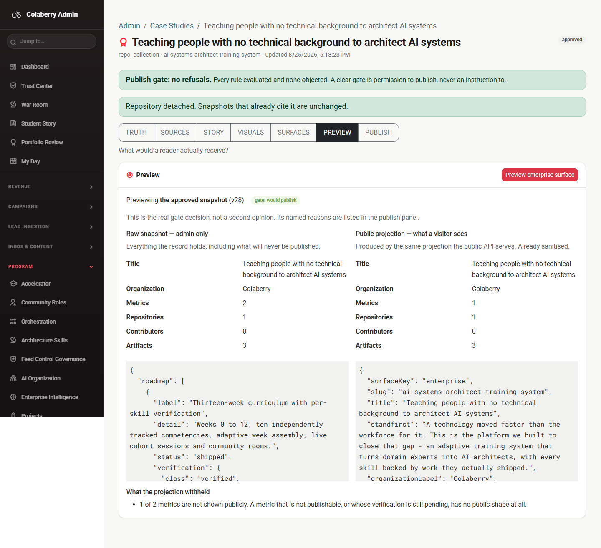
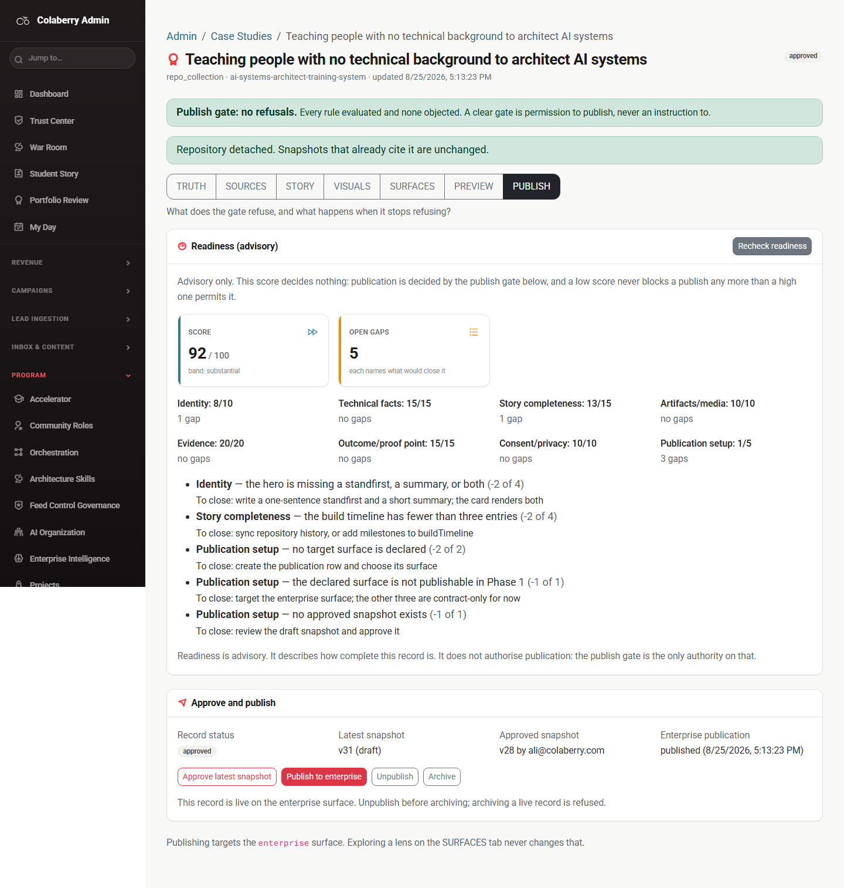
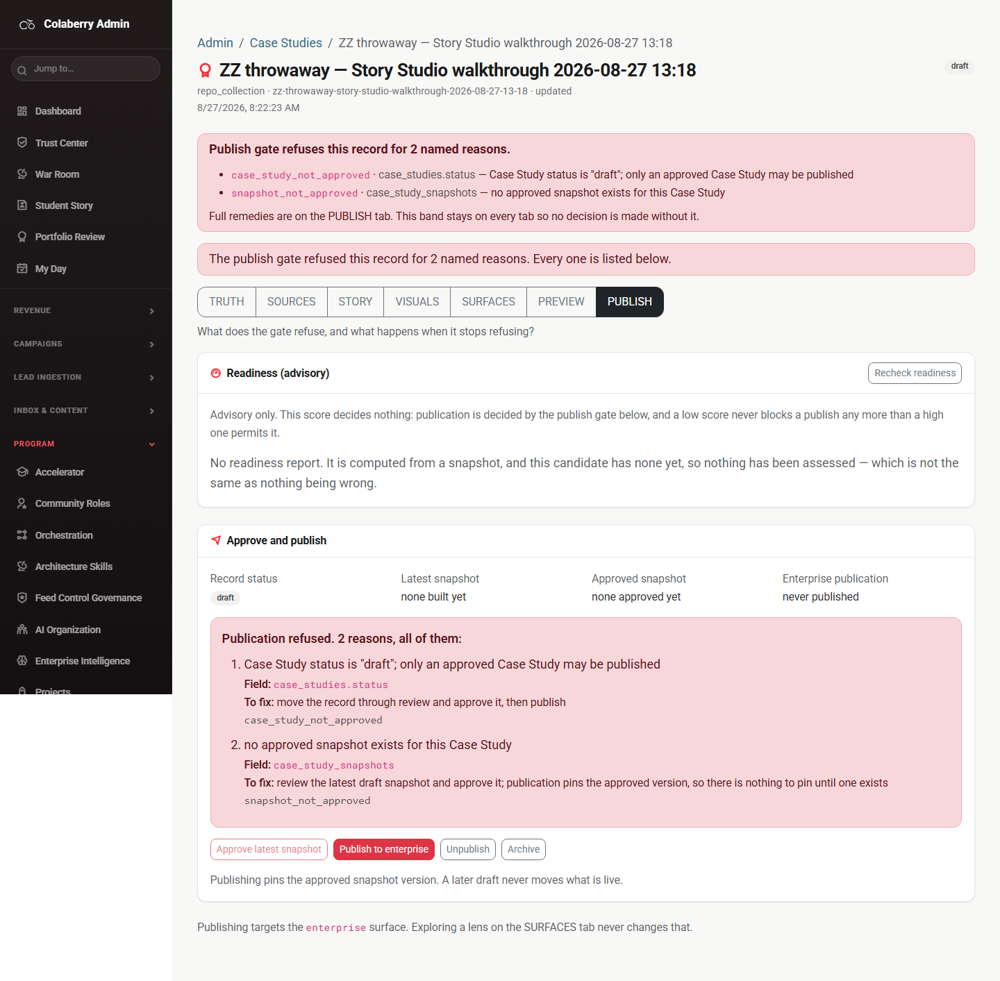

✓ What the five fixes actually changed all five held
“Each was proved by a unit test and a mutation. Do they work on the live surface?”
Each fix below was confirmed in the live browser, by measuring the thing that was
wrong rather than by looking for the fix’s own code. The admin bundle is code-split, so
grepping main.js for a component name proves nothing either way.
| # | What was broken | 2026-08-26 | 2026-08-27 | Held? |
|---|---|---|---|---|
| 1 | Provenance read a wire format the server does not send. The reader looked
for source/sourceRef; the server sends
{tier, origin, recordedAt}, so every row fell through to the
'unknown' default. |
14 of 14 rows read unknown |
0 of 14 rows read unknown |
Held |
| 2 | Every write reported its outcome to a tab the operator was not on. One
actionNote and one actionError, both rendered only inside
the PUBLISH panel. |
no response of any kind, success or failure |
visible on TRUTH, SOURCES and PREVIEW |
Held |
| 3 | The PREVIEW tab pushed the whole admin shell sideways. The raw-snapshot
<pre> widened its column instead of scrolling inside it. |
7745px scrollWidth vs 1440 viewport |
1440px scrollWidth vs 1440 viewport |
Held |
| 4 | An override offered on a record that cannot take one. The panel said “no snapshot yet, nothing to review” and rendered three enabled Apply-override buttons underneath it. Pressing one 404s. | 3 of 3 buttons enabled |
0 of 3 enabled, reason on screen |
Held |
| 5 | Two elements, one test id. The Repository input and the Analyze button both
carried data-testid="cs-analyze-repo", so the §18 capability guard
was asserting against a text box. |
2 elements share the id |
1 element (the INPUT); button is cs-analyze-run |
Held |
| 6 | Duplicate metric key in the chart builder — the half that was
fixed. heroMetrics ++ measurement.metrics both carried
verified_competencies, so two checkboxes rendered with one id and the
second label toggled the first input. |
2 checkboxes 1 distinct key |
1 checkbox 1 distinct key |
Held |
How each was measured, not asserted
- Provenance was read out of the rendered table cells, not out of the API
payload. The defect was entirely in the reader — the payload always carried the
tier, the actor and the commit sha — so a check against the payload would have gone
green while an operator stared at fourteen rows of
unknown. Today: 14 rows, 0 unknown, sources namedrepo_extractionandhuman_override, and 14 of 14 carry a detail that makes the claim checkable. Switching to the older snapshot version re-read it and also returned 0 of 14 unknown, so the fix is not specific to the latest draft. - Action feedback was proved on both branches, because it was the failure
branch that was invisible and a successful save says nothing about it. The success line
was seen on TRUTH (“Consent saved on the record…”) and on SOURCES
(“Repository attached. Sync to read it.”). The failure was then forced
by fulfilling the consent
PATCHwith a 500 inside the browser, so no request reached the server and production consent could not be altered by the check even in principle. The error banner rendered on TRUTH. The band also survives a tab change: the PREVIEW screenshot below still carries “Repository detached” from a write made on SOURCES. PUBLISH was checked separately for duplicate ids, since moving a banner is a good way to accidentally render it twice — 1 and 0, so no duplication. - The overflow is the one that needed the most care, and the first attempt at it
was thrown away. On the first run of the day PREVIEW measured a clean
1440 — but the projection had never rendered, because the panel had answered 403.
An absence assertion is trivially true of a panel with nothing in it, so that measurement
proved nothing and was discarded. The number quoted above comes from the second run,
where the projection did render: 11,481 characters of JSON on screen and
scrollWidthstill 1440 againstclientWidth1440.
1 TRUTH works
“What is established about this record, who consented to what, and where did each value come from?”
What it is for
The canonical record and its consent axis. Four panels: the Storyline (editorial direction that aims the draft generator), Consent and privacy, Contributors, and Provenance.
What you can do here
Worked today (20 checks, 0 failures)
- Storyline save. Typed, saved, read back from the server: the panel showed
“Last written by ali@colaberry.com” and
GET /storylinereturned the same text with the same author. - Consent fields rendered the record’s real values
(
named/Colaberry/public/role_only), and re-saving the same values left the record unchanged, confirmed through the API. - The save now answers. “Consent saved on the record. Rebuild the snapshot with a sync and approve it again, or the gate will refuse the publish for a consent mismatch.” That is a genuinely useful sentence: it names the next action, not just the outcome.
- A failed save also answers — forced, and seen.
- Provenance reads properly: 14 rows, every one naming its tier and either the repository and commit it was extracted from, or the person who overrode it and why.
- Contributors is empty and says so: “No contributors in this snapshot. The public page shows no credits section rather than an empty one.”
What you cannot yet do here
- Add a contributor. The panel reports them; nothing on this tab creates one. They arrive only from a sync.
- Correct a provenance entry. It is a read-only ledger. A wrong attribution is changed by overriding the underlying field on STORY, not here.
- See consent history. The panel shows the current values only; there is no record on this tab of who changed a consent flag or when.
The tab, as captured today

01-truth.png — the Provenance table is the fix. Compare
2026-08-26-story-studio/01-truth.png, where all fourteen Source cells read
“unknown” and all fourteen Detail cells read “—”.
2 SOURCES works
“What evidence exists, and what does each source actually prove?”
What it is for
Where the record’s facts come from: attached repositories, the repository analyzer, the evidence ledger, manual sync, sync history, and the published-vs-draft diff.
What you can do here
Worked today (17 checks, 0 failures)
- Attach and detach round-trip. A repository was attached (1 → 2), appeared in the table, was detached, and the record ended with exactly the one repository it started with.
- The analyzer ran against a real public repository and returned 7 proof
elements, access status
connected, reporting both “What this repository proves” and “What it cannot prove”. That second heading is the honest half and it is genuinely there. - Both analyzer controls are now separately addressable —
cs-analyze-reporesolves to one element (the input) and the button has its owncs-analyze-run. - Manual sync reported “success, 1 of 1 repositories read, 156 facts, 0 candidate metrics. Snapshot created (v31).”
- Sync history listed 7 runs; the published-vs-draft diff rendered a real comparison table.
What you cannot yet do here
- Add evidence by hand. The evidence panel is a projection of what sync found. There is no control that files a document, a link or a customer artifact as evidence.
- Re-run a single past sync, or roll one back. History lists runs; it does not let you act on one.
- Analyze a private repository you have not connected. The analyzer reports its access status honestly rather than guessing, which is right, but there is no connect-a-repo flow on this tab.
One thing seen once and not reproduced
On the first run of the day, a single API read issued about four seconds after the
attach answered zero repositories for a record that had one before the attach and two
after it — and because the harness took that one reading as final, it reported a failed
attach that had in fact succeeded, then skipped the detach and left a repository behind. (It
was removed by hand immediately; see “what this walkthrough wrote to production”.)
It has not been reproduced. attachRepository is wrapped in a
sequelize.transaction, and the second run’s first reading was already
correct. It is recorded here as an observation about read timing and not claimed as a
defect, because one unreproduced reading is not evidence of one. The harness now polls
instead of taking a single reading, which is the right engineering regardless of the cause.
The tab, as captured today

02-sources.png — the analyzer’s two headings, “What this repository proves” and “What it cannot prove”, are the tab’s best idea.
3 STORY works
“What are we saying, in whose words, and has a human stood behind each sentence?”
What it is for
Draft generation, the narrative override fields (spec §34), metrics, and consent-gated quotes.
What you can do here
Worked today (12 checks, 0 failures)
- Draft generation produced 15 draft elements and disclosed its engine
honestly: “Last run by:
deterministic”. It does not imply a model wrote it. - All four drafts were rejected, leaving 0 pending drafts behind — confirmed through the API, not from the screen.
- The override control is live on this record, because this record has a snapshot. That is the positive half of fix 4: the control is not simply disabled everywhere now, it is disabled where it cannot work.
- Metrics rendered 9 elements; quotes rendered their form plus a named empty state and stated their consent condition.
What you cannot yet do here
- Create a metric. Nine metric elements render, all read from the snapshot, all
overridable — but nothing on this tab adds a row to
case_study_metrics, which is the table charts and the publish gate actually read. This is the root of the chart problem on VISUALS. - Get a draft from a language model. The generator is deterministic and says so. The seam exists; nothing is behind it.
- See suggested quote slots. The page passes an empty list, so the panel offers no guidance about which quotes a story of this shape wants.
- Promote a draft on this record safely — possible, but deliberately not
exercised here: promotion mints a new snapshot version and would move a published
record into
draft-ahead.
The tab, as captured today
03-story.png — “Last run by: deterministic” is the most important sentence on the tab.
4 VISUALS works — but charts still resolve nothing
“What can be shown, and does every number in a picture come from a verified metric?”
What you can do here
Worked today (9 checks, 0 failures)
- Artifacts is empty and says so in words.
- The chart builder offers each key exactly once now — 1 checkbox, 1
distinct key. Last month it offered
verified_competenciestwice with one shared id, so the second label toggled the first input. - A chart saved and persisted, and the panel told the truth about it: “Renders: nothing — no metric it names is publishable and verified.”
What you cannot yet do here
- Build a chart that renders anything. This is the open half of defect 6, and it
is unchanged. The builder offers keys read from the snapshot, while
resolveChartresolves against thecase_study_metricstable, which has no rows for this record. So every key it offers resolves to nothing. The panel is honest about it — “No metric on this record carries that key” — but the form is currently a form with a correct error message behind it. Closing this needs a metric-listing endpoint the admin API does not have. That is a new contract, not a bug fix. - Select a hero image or promote an artifact. Both are per-artifact controls and this record has zero artifacts, so neither has ever been seen working or failing.
- See the architecture diagram. There is no admin preview of it anywhere in the seven tabs. It renders on the public page only.
The tab, as captured today

04-visuals.png — “Renders: nothing” is the correct answer, honestly given, to a question the system cannot yet answer any other way.
5 SURFACES works — gated, and it misnames the gate
“How does this one record read to four different audiences?”
What you can do here
Worked today (11 checks, 0 failures)
- The four-lens switcher renders and the default Enterprise lens loads 9 bands.
- The canonical truth line renders, which is the whole point of the tab: it proves the lens changed the presentation and not the facts.
- Publication state and gate verdict: “published — live on this surface · gate: would publish”.
- Draft state is a state, not an invented count: “draft is ahead — draft v31 is not the published version”, followed by the reason a count would be dishonest (snapshots are content-hashed wholes).
- The live surface is marked in text (“↑ LIVE”), not by colour alone — which is an accessibility decision someone made on purpose.
- Selecting a gated lens states a refusal rather than blanking the panel, and selecting the default lens again clears it.
What you cannot yet do here
- Use three of the four lenses.
CASE_STUDY_SURFACE_LAB_USER_IDSis unset on the production backend, so Training and AI Flotation answer 403 for every admin. Measured directly against the API this run:GET /previewand?surfaceKey=enterprisereturn 200,?surfaceKey=trainingreturns 403. Nothing in this walkthrough changed that variable and nothing should: it is a production configuration decision, not a bug to work around. - Trust the refusal message. See the new defect below — the 403 is reported as an expired session.
The tab, as captured today

05-surfaces.png — the canonical truth line under the lens switcher is what stops a lens becoming a second version of the facts.
6 PREVIEW works — overflow fixed
“What would a reader actually receive?”
What you can do here
Worked today (8 checks, 0 failures)
- The projection rendered beside the raw snapshot, two columns, each one a readable JSON block — 11,481 characters of it.
- The page no longer overflows.
scrollWidth1440 againstclientWidth1440, with that JSON on screen. On 2026-08-26 the same tab measured 7745 against 1440. - The panel names what the projection withheld: “1 of 2 metrics are not shown publicly. A metric that is not publishable, or whose verification is still pending, has no public shape at all.” That single line is the tab’s justification for existing.
- It states the gate decision honestly: “This is the real gate decision, not a second opinion.”
What you cannot yet do here
- Choose which surface to preview. The surface is inherited from the SURFACES
tab — both read one shared
desk.lensSurface. The only thing on this tab that reveals it is the button label, “Preview enterprise surface”. Leave a gated lens selected on SURFACES and this tab previews that surface and fails with a 403, on a tab that worked a minute earlier. That is how the new defect below was found. - Preview an unapproved draft as a visitor would see it. The panel previews the approved snapshot (v28), which is correct and clearly labelled, but there is no way to ask “what would v31 look like if I approved it?”
The tab, as captured today

06-preview.png — two things at once. The JSON now wraps inside its column instead of widening the page (fix 3). And the green banner above the tab strip, “Repository detached”, is the outcome of a write made on SOURCES, still visible two tabs later (fix 2).
7 PUBLISH works — read-only paths only
“What does the gate refuse, and what happens when it stops refusing?”
What you can do here
Worked today (12 checks, 0 failures)
- Readiness declares itself advisory rather than gating, and named 5 gaps with a “To close:” instruction on each.
- Publication state renders: “published (8/25/2026, 5:13:23 PM)”.
- The gate band renders above the tab strip here too, reporting 0 blockers for this record.
- The action note and error are not duplicated now that the band renders globally — 1 and 0 elements. Moving a banner is an easy way to end up rendering it twice; it did not happen.
- All four lifecycle controls are present.
Not exercised on the live record, on purpose
- Approve, publish, unpublish and archive were not pressed on the pilot. It is live on the Enterprise surface. These were exercised on a throwaway record instead, which is the only honest way to test a destructive path without damaging the thing you are testing.
- Readiness advises but cannot act. Each gap names how to close it; none of them is a link or a button that takes you there.
The tab, as captured today

07-publish.png — readiness is advisory and says so; the gate is separate and binding.
8 A throwaway record — the acts the live one must not receive works
What actually happened
- A record was created from a repository collection and identified by its own title.
- Fix 4, seen where it matters. On a record with no snapshot, 0 of 3 override buttons were pressable, and the reason was on screen: “This candidate has no snapshot, so there is no field to override. Run a sync on the SOURCES tab to build one.” An inert control with no stated reason is a dead end, not a fix, so both halves were checked.
- Approve is inert while there is nothing to approve — disabled, rather than offering an action that cannot succeed.
- The gate refused the publish and named every reason: 2 blockers
(
case_study_not_approved,snapshot_not_approved), each listed on screen under a banner that states the count. - The record was archived, leaving no debris on the review desk.
Publish was pressed only because the gate had already named a refusal. That ordering is deliberate: it makes a successful publish to the live public site impossible by construction rather than by intention.

09-throwaway-gate-refusal.png — a refusal that names its reasons.
+ The one new defect this run found found and fixed, not deployed
403 was reported as an expired session
What was seen. Selecting the Training lens on SURFACES produced: “Your
session is not authorized to read this preview. Sign in again.” The same sentence
then appeared on PREVIEW, because both tabs share one desk.lensSurface.
Why it is wrong. The session was fine. The backend returned 403 because
CASE_STUDY_SURFACE_LAB_USER_IDS is unset, which is an allowlist, not an
authentication state. An admin who follows that instruction signs out, signs back in, and gets
the identical error — and the message has sent them around a loop that always ends where
it started. 401 and 403 are different facts and must not share a sentence: 401 means
“we do not know who you are”, where signing in again is exactly the fix; 403 means
“we know exactly who you are and the answer is still no”, where it never is.
Root cause. One shared helper, describeApiError in
frontend/src/services/adminOrgApi.ts, collapsed both statuses into one branch.
Every admin page routes its failures through it.
Why nothing caught it. The two suites that appear to cover this helper
— AdminCaseStudies.states.test.tsx and
AdminBusinessAccounts.test.tsx — both jest.mock the module and
then assert against a string they supply themselves. They prove the page renders whatever it is
handed and say nothing whatsoever about what the function returns. A wrong message was
invisible to a green suite. The real function had no test at all; it has one now.
Fixed, and left honest. 401 keeps “Sign in again”. 403 now says the account is not permitted and that signing in again will not change this, because it is a permission or configuration setting. The 404 and generic branches are untouched.
A second wording problem, recorded rather than fixed
The same helper describes every failure as a load failure, including writes. The forced consent-save failure rendered: “Could not load this consent change (HTTP 500). This is a load failure, not an empty result.” Nothing was being loaded; a save failed.
It is not fixed here, deliberately. Fixing it properly means threading a read/write
distinction through 24 call sites across four modules, which is a refactor rather than a
bug fix and is outside this brief’s scope. The remedy is named so the next person does
not have to rediscover it: give describeApiError an optional
action: 'read' | 'write' defaulting to 'read', so existing callers
are unchanged and only the write paths need touching. The message is confusing, not wrong
enough to justify a same-day refactor of every admin error path.
∑ Every defect, across both passes
| # | Where | What was wrong | State |
|---|---|---|---|
| 1 | TRUTH | Provenance rendered fourteen rows all reading unknown. The reader
looked for source/sourceRef; the server sends
tier/origin/recordedAt. |
Fixed · verified live |
| 2 | Every tab | The outcome of every write rendered only inside the PUBLISH panel. A failed consent save on TRUTH produced no visible response of any kind. | Fixed · verified live |
| 3 | PREVIEW | The projection JSON pushed the page to 7745px against a 1440px viewport — a 6,305px horizontal overflow affecting the whole admin shell. | Fixed · verified live |
| 4 | STORY | Three enabled Apply-override buttons on a record the panel had just said has no snapshot. Pressing one 404s. | Fixed · verified live |
| 5 | SOURCES | The Repository input and the Analyze button shared
data-testid="cs-analyze-repo", so the capability guard was asserting
against a text box. |
Fixed · verified live |
| 6 | VISUALS | Duplicate metric key offered twice with one id — fixed and verified.
The deeper half is unchanged: the builder’s keys come from the snapshot while
the resolver reads case_study_metrics, so every offered key resolves to
nothing. Closing it needs a metric-listing endpoint that does not exist. |
Half open |
| 7 | SURFACES PREVIEW |
New on 2026-08-27. A 403 from the surface-lab allowlist was reported as “Your session is not authorized… Sign in again”, instructing the operator to do the one thing that cannot possibly help. | Fixed locally |
| 8 | All admin | New on 2026-08-27. Write failures are described as load failures (“Could not load this consent change… This is a load failure”). Remedy named; 24 call sites, out of scope here. | Open, recorded |
Console errors: three, all accounted for. Zero page errors, zero warnings, zero failed requests. The three console errors are the browser logging three non-2xx responses, each of which is explained: the 500 on TRUTH is the failure this run forced itself inside the browser and which never reached the server; the 403 on SURFACES is the gated Training lens; the 400 on the throwaway is the publish gate correctly refusing. Nothing unexplained appeared in the console across all seven tabs, the record load, the public page and the throwaway lifecycle.
Two things checked and dismissed rather than reported. Strings such as “not the
published versionA state, not a count” and “(-2 of 4)To close:”
look like missing separators in the raw capture, but they are an artifact of reading a parent
element’s textContent across adjacent block children. In the DOM they are a
d-block span on its own line, and the screenshots confirm they render correctly.
They are not defects and are not counted as any.
! What is not yet possible
This is the section to read before deciding what Story Studio can be used for. Everything below was observed on 2026-08-27, not inferred from a roadmap.
- No LLM is wired to anything. The draft generator is deterministic and says so on
screen: “Last run by:
deterministic”. It is behind a seam, so a model can be dropped in later, but today nothing generates prose that a model wrote. Drafts are assembled from repository facts. Unchanged. - The four-lens switcher is gated off for non-default surfaces.
CASE_STUDY_SURFACE_LAB_USER_IDSis unset on the production backend. Measured again this run:GET /previewand?surfaceKey=enterprisereturn 200,?surfaceKey=trainingreturns 403. Three of the four surfaces arepublishable: falseanyway. Unchanged, and the refusal message for it is new defect 7. - External references were never built. No surface anywhere in the seven tabs for a customer reference, a testimonial from outside the platform, or a third-party citation. Quotes exist, but they are internal and consent-gated. Unchanged.
- Charts are unproven end to end. A chart can be created and it correctly reports
what it would render — which, on this record, is nothing. No chart has ever been seen
resolving a real metric and appearing on a public page, because
case_study_metricsis empty for the only record that exists. Unchanged. - Metrics cannot be created anywhere in Story Studio. Nine metric elements render on STORY, all read from the snapshot, all overridable — but no control adds a row to the metric table that charts and the publish gate read. This is the single missing piece that keeps the chart subsystem theoretical. Unchanged.
- Hero selection and artifact promotion are untested. Both are per-artifact controls and the pilot record has zero artifacts. Neither has been seen working or failing. Unchanged.
- The architecture diagram has no admin preview. It renders on the public page from
a CDN-loaded mermaid; to see whether a change to it worked, you visit
/stories/:slug. Unchanged. - PREVIEW cannot choose its own surface, and does not clearly say that the surface came from another tab. New observation this run.
- Charts cannot be deleted. There is no delete route for a chart in the admin API, so an unapproved test chart stays on the record permanently. Three have now accumulated on the pilot from three walkthroughs. None is approved, so none renders publicly. New observation this run.
→ What this record publishes to works
The published page at /stories/ai-systems-architect-training-system rendered
with the record’s headline and, unlike the admin VISUALS tab, a real mermaid
architecture diagram — one <svg>, rendered, no placeholder and no
failure state. GET /api/public/case-studies/:slug returned 200 before,
during and after this walkthrough.

08-public-story.png — the diagram the VISUALS tab governs but never shows.
⚠ What this walkthrough wrote to production
Stated in full, because a walkthrough that writes to a live record and does not say so is not a walkthrough. Two full runs happened today: the first surfaced harness problems, the second is the one reported above.
- A storyline on the pilot record, twice. Editorial direction, stored outside the snapshot, unpublishable by construction.
- A re-save of the consent fields with the values already on them, verified unchanged afterwards. Plus one deliberately failed consent save, which never reached the server because the run answered its own request with a 500 in the browser.
- One repository attached and detached per run. The first run’s detach was skipped because of the harness read described under SOURCES, leaving one extra repository attached; it was removed by hand within minutes and the record verified back to exactly the one repository it started with.
- Two manual syncs, creating draft snapshots v30 and v31. A sync creating a new draft is that command’s documented behaviour, not a side effect.
- Eight AI drafts generated and all eight rejected. No pending drafts remain.
- Two charts, unapproved, which resolve nothing. They cannot be deleted — there is no route for it — so they remain as evidence for defect 6.
- Two throwaway records, each created and archived.
The pilot record, before and after
| Field | Before (07:50 UTC) | After (13:23 UTC) | |
|---|---|---|---|
| Status | approved | approved | Same |
| Approved snapshot | v28 · 6e0f9f17… | v28 · 6e0f9f17… | Same |
| Publication | enterprise · published · v28 · 2026-08-25T22:13:23Z | enterprise · published · v28 · 2026-08-25T22:13:23Z | Same |
| Repositories | 1 | 1 | Same |
| Public page | HTTP 200 | HTTP 200 | Same |
| Latest draft snapshot | v29 | v31 | Moved |
Never touched: the pilot was not approved, published, unpublished, archived or overridden. The approved snapshot and the publication are byte-identical before and after, which is the thing that actually matters — the only field that moved is the draft head, which is what a sync is for.
§1 The empty variable set
“I should also have an empty set of how to pass in the variables.”
What this object is
It is case_study_snapshots.content, typed as
CaseStudySnapshotContent.
backend/src/types/caseStudy.ts:486–499
Exactly three keys are required — identity,
heroMetrics and taxonomy — because a record cannot be rendered
or filtered without them. An empty heroMetrics array is legal: a record with no
verified figure renders a proof point instead of an invented number. Every other section is
optional, because the detail page hides unsupported sections rather than rendering them
empty, so “absent” must be representable and distinct from “present but
blank”.
How you actually pass it in — and the thing that surprises people
There is no endpoint that accepts this object. Nothing in the admin API takes a content blob. Content arrives one of two ways: a sync builds it from attached repositories, or a human overrides one path at a time:
POST /api/admin/case-studies/:id/overrides
{ "path": "identity.standfirst", "value": "...", "note": "why" }
route backend/src/routes/admin/caseStudyAdminRoutes.ts:336–344 · body schema :135–138
- A path whose parent does not exist is refused, not conjured. The call answers 400 with “The path … does not exist in this snapshot, so the edit was not applied. Edit a field the snapshot already carries.” You cannot author a record by pushing this skeleton at it — you can only edit fields a sync already put there. backend/src/services/caseStudy/caseStudyAdminReview.ts:236–243
- Every override mints a new draft snapshot version in your name, stamped provenance
human_override. It does not publish and cannot alter an approved snapshot. caseStudyAdminReview.ts:256–266 · caseStudySnapshotOverrides.ts:148–152 - The value is never type-checked. The schema is
value: z.unknown()and the writer sets it verbatim. A misspelled enum is accepted, stored, and then renders blank — nothing rejects it at write time. This is why the enum columns in §2 matter more than they look, and it is how a template shipped two wrong enums without anything failing. caseStudyAdminRoutes.ts:136 · caseStudySnapshotOverrides.ts:141
So the skeleton is a planning artifact. Fill it in offline; it then tells you which override calls to make, in which order, with which values.
The skeleton, every field, no values
Optional keys are present here so the shape is complete. Delete every key you are not filling in rather than sending it empty — absent hides the band, blank does not.
{
"identity": {
"slug": "",
"title": "",
"standfirst": "",
"summary": "",
"organizationDisplayName": null,
"organizationIdentityMode": "",
"organizationNamingConsent": false,
"builderIdentityMode": "",
"builderNamingConsent": false,
"builtByType": "",
"programLabel": "",
"engagementWindow": {
"start": "", "end": "", "durationLabel": "",
"verification": { "class": "", "method": "", "verifiedAt": "", "evidenceId": "" }
},
"productionStatus": {
"status": "",
"verification": { "class": "", "method": "", "verifiedAt": "", "evidenceId": "" }
}
},
"heroMetrics": [
{
"key": "", "label": "", "valueDisplay": "",
"numericValue": null, "unit": "", "metricType": "",
"verification": { "class": "", "method": "", "verifiedAt": "", "evidenceId": "" },
"isHeadline": true, "publishable": false,
"measurement": {
"baseline": "", "sample": "", "measured": "", "methodology": "", "limitations": []
}
}
],
"situation": {
"narrative": [], "constraints": [], "goals": [],
"verification": { "class": "", "method": "", "verifiedAt": "", "evidenceId": "" }
},
"buildTimeline": [
{
"date": "", "endDate": "", "label": "", "detail": "",
"source": "", "sourceRef": "",
"verification": { "class": "", "method": "", "verifiedAt": "", "evidenceId": "" }
}
],
"architecture": {
"narrative": [], "stack": [], "capabilities": [],
"integrations": [], "dataStores": [],
"diagram": {
"nodes": [ { "id": "", "label": "", "kind": "" } ],
"edges": [ { "from": "", "to": "", "label": "" } ]
},
"diagramSource": ""
},
"measurement": {
"narrative": [],
"metrics": [
{
"key": "", "label": "", "valueDisplay": "",
"numericValue": null, "unit": "", "metricType": "",
"verification": { "class": "", "method": "", "verifiedAt": "", "evidenceId": "" },
"isHeadline": false, "publishable": false,
"measurement": {
"baseline": "", "sample": "", "measured": "", "methodology": "", "limitations": []
}
}
]
},
"roadmap": [
{
"label": "", "status": "", "detail": "",
"verification": { "class": "", "method": "", "verifiedAt": "", "evidenceId": "" }
}
],
"contributors": [
{ "displayMode": "named", "displayName": "", "role": "", "kind": "",
"consentRecordedAt": "" },
{ "displayMode": "role_only", "role": "", "kind": "" },
{ "displayMode": "anonymous", "kind": "" }
],
"artifacts": [
{
"id": "", "artifactType": "", "title": "", "description": "",
"sourceType": "", "sourceRef": "", "sourceCommitSha": "",
"visibility": "", "status": "", "publicUrl": "", "previewUrl": ""
}
],
"repositories": [
{
"repoOwner": "", "repoName": "", "repoUrl": "", "role": "",
"visibility": "", "accessStatus": "", "allowPublicRepoLink": false,
"defaultBranch": "", "lastSeenSha": "", "lastSyncedAt": ""
}
],
"taxonomy": {
"industry": "", "primaryCapability": "",
"capabilities": [], "stack": [],
"programKey": "", "builtByType": "",
"deliverables": [], "projectStatus": ""
}
}
Two of these arrays you do not author.
repositories[] is written by attach and sync, and
artifacts[].id is a database id — both are shown for completeness so the
shape is not misleading, not because you fill them in by hand.
§2 Every field, annotated, grouped by the tab that owns it
“I’d like the full set.”
Grouped by the seven tabs so the reference maps onto the screen. The tab order is the order of the work and is defined as data. frontend/src/components/admin/caseStudy/caseStudyStudioTabs.ts:57–89
TRUTH — identity, the consent axis
| Path | Type | Req | Allowed values | What it does / if omitted |
|---|---|---|---|---|
| identity.slug | string | yes | lowercase, hyphenated | The /stories/:slug address. Missing from the shipped template.rubric caseStudyReadinessRubric.ts:221–223 |
| identity.title | string | yes | free text | Page heading and index card both read it.types/caseStudy.ts:311 |
| identity.standfirst | string | no | free text | One sentence under the title. Card renders it.types/caseStudy.ts:313 |
| identity.summary | string | no | free text | Short summary; the card renders it alongside the standfirst. Missing from the shipped template.types/caseStudy.ts:314 · rubric :229–231 |
| identity.organizationDisplayName | string | no | free text or null | Required when the mode is named; must be absent when the mode is hidden, or the gate blocks.gate caseStudyPublishRules.ts:261–270 |
| identity.organizationIdentityMode | enum | yes | named · anonymized · hidden |
Drift between this and the record row is itself a blocker.types/caseStudy.ts:108 · gate :245–249 |
| identity.organizationNamingConsent | boolean | yes | true / false | named without consent ⇒ blocker organization_consent.gate :255–260 |
| identity.builderIdentityMode | enum | yes | named · role_only · anonymous |
types/caseStudy.ts:115 |
| identity.builderNamingConsent | boolean | yes | true / false | named without consent ⇒ blocker builder_consent.gate :291–295 |
| identity.builtByType | enum | no | learner · intern · client_team · colaberry_team · ai_flotation_team · joint_team |
Six values, no others. client and partner are not members — and the admin API accepts them with a 200 and then silently discards them at the next snapshot build, because the write path validates a free string and the build narrows with a function that returns undefined for a non-member. No error is ever shown.types/caseStudy.ts:118–125 · free-string write caseStudyAdminService.ts:129 · silent drop caseStudySyncSources.ts:100–102, 155 |
| identity.programLabel | string | no | free text | Hides when absent. Missing from the shipped template.types/caseStudy.ts:321 |
| identity.engagementWindow | object | no | start (required), end, durationLabel, verification (required) |
Duration renders only when verified, which is why verification is paired into the object. Missing from the shipped template.types/caseStudy.ts:323–328 |
| identity.productionStatus | object | no | status: shipped · in_progress · paused · not_pursued · unknown; plus verification |
Typed as CaseStudyRoadmapStatus — it genuinely does share the roadmap vocabulary. Verified with no evidenceId ⇒ proof_metadata_missing.types/caseStudy.ts:329–332 · :244–249 · gate :371–375 |
| contributors[] | union | no | 3 shapes keyed on displayMode: named (needs displayName, role, kind, consentRecordedAt) · role_only (role, kind) · anonymous (kind) |
A discriminated union, so “named without consent” has no shape to occupy. kind takes the builtByType values. Absent from the shipped template entirely.types/caseStudy.ts:414–431 · gate :301–315 |
TRUTH — taxonomy, the filter vocabulary
| Path | Type | Req | Allowed values | What it does / if omitted |
|---|---|---|---|---|
| taxonomy.industry | string | no | free text | Facet on the index. |
| taxonomy.primaryCapability | string | no | free text | Facet on the index. |
| taxonomy.capabilities | string[] | yes | free text | The /stories filters read it. Rubric wants 2–4.rubric :243–245 |
| taxonomy.stack | string[] | yes | free text | Auto-filled by sync. Rubric wants 3–5.rubric :239–241 |
| taxonomy.deliverables | string[] | yes | free text | Required array; may be empty.types/caseStudy.ts:472 |
| taxonomy.programKey | string | no | free text | Missing from the shipped template.types/caseStudy.ts:470 |
| taxonomy.builtByType | enum | no | as above | Read in preference to identity.builtByType by the projection.caseStudyPublicProjection.ts:181 |
| taxonomy.projectStatus | enum | no | the five roadmap statuses | Distinct from identity.productionStatus. Missing from the shipped template.types/caseStudy.ts:473 |
STORY — the prose, the figures, and the two story assets
| Path | Type | Req | Allowed values | What it does / if omitted |
|---|---|---|---|---|
| situation.narrative | string[] | yes* | free prose | *Required only if situation is present at all. Rubric wants 2+ paragraphs.types/caseStudy.ts:337 · rubric :258–260 |
| situation.constraints / .goals | string[] | no | free prose | Hide when absent. |
| situation.verification | object | yes* | class + method | Required whenever situation exists.types/caseStudy.ts:340 |
| architecture.stack / .capabilities | string[] | yes* | free text | Both required whenever architecture exists.types/caseStudy.ts:368–369 |
| architecture.narrative | string[] | no | free prose | Band returns null when empty.CaseStudyArchitecture.tsx:47 |
| architecture.integrations / .dataStores | string[] | no | free text | Hide when absent. |
| measurement.metrics | object[] | yes* | see metric entry below | Band hides only when narrative and metrics are both empty.CaseStudyMeasurement.tsx:55 |
| heroMetrics | object[] | yes | same shape as a metric | Required key; an empty array is legal and renders a proof point instead of an invented number. The shipped template fills this with prose notes, which is not a valid value.types/caseStudy.ts:487 |
| roadmap[] | object[] | no | label + status + verification required; detail optional |
Band returns null when empty. Items admitting what was not solved are the most credible.types/caseStudy.ts:399–404 · CaseStudyRoadmap.tsx:30 |
| buildTimeline[] | object[] | no | date, label, source, verification required; source ∈ commit · pull_request · release · project_stage · artifact · milestone · manual |
Band returns null when empty. Absent from the shipped template entirely.types/caseStudy.ts:265–272, 343–352 · CaseStudyTimeline.tsx:49 |
The metric entry, in full
| Field | Type | Req | Allowed values | Notes |
|---|---|---|---|---|
| key | string | yes | stable snake_case | Mirrors case_study_metrics.metric_key. |
| label / valueDisplay | string | yes | free text | Never invent a valueDisplay to fill a card.rubric :334–337 |
| metricType | enum | yes | business_outcome · delivery · performance · scale · quality · adoption · technical |
Required, and absent from the shipped template entirely. Seven values.types/caseStudy.ts:133–140 |
| numericValue / unit | number / string | no | — | Missing from the shipped template.types/caseStudy.ts:298–299 |
| isHeadline | boolean | yes | true / false | A headline figure needs baseline, sample or methodology or the gate blocks.gate :363–368 |
| publishable | boolean | yes | true / false | Defaults false in the table. Only publishable metrics are gate-visible.ensureCaseStudySchema.ts:213 · gate :169 |
| verification.class | enum | yes | verified · anonymized · illustrative · pending | pending on a visible metric ⇒ blocker metric_pending.types/caseStudy.ts:47 · gate :223–231 |
| verification.method | enum | yes | client · repo · platform · internal · self · manual |
Six values. The shipped template lists five — it omits manual, which is also the column default.types/caseStudy.ts:55–61 · ensureCaseStudySchema.ts:203 |
| verification.verifiedAt | ISO datetime | no | — | Its absence is why pending exists. Missing from the shipped template.types/caseStudy.ts:91 |
| verification.evidenceId | string | no | case_study_evidence.id | Required in practice: verified with no evidenceId ⇒ proof_metadata_missing.gate :357–361 |
| measurement.limitations | string[] | yes* | free text | *Required whenever measurement is present. An empty array is an explicit “none”, which differs from “nobody considered it”.types/caseStudy.ts:289 |
| measurement.measured | string | no | free text | Missing from the shipped template.types/caseStudy.ts:287 |
STORY — storyline (a story asset, not part of content)
| Column | Type | Req | Notes |
|---|---|---|---|
| storyline_text | TEXT | yes | One row per record — case_study_id is the primary key, so saving replaces.ensureCaseStudyStoryAssets.ts:57–63 |
| authored_by | VARCHAR(255) | system | Taken from the acting admin session. |
What the field says of itself on screen, verbatim: “This is editorial direction, not a fact about the record.” It “aims the draft generator and tells the next reviewer what this record is for. It is stored outside the snapshot entirely, so it cannot be published, cannot appear on any surface, and is never scanned as a claim. Write what you think the story is, including the parts you have not proved yet.” frontend/src/components/admin/caseStudy/CaseStudyStorylinePanel.tsx:45–50 · routes GET/PUT/DELETE caseStudyStudioRoutes.ts:203–231
STORY — quotes (the highest-risk asset in the system)
| Column | Type | Req | Allowed values / default | Notes |
|---|---|---|---|---|
| quote_text | TEXT | yes | — | Human-supplied. There is no generate route for a quote. |
| attribution_mode | VARCHAR(20) | yes | named · role_only · anonymous |
named requires both display_name and consent_recorded_at — a SQL CHECK, so it is unstorable otherwise, including through direct SQL.ensureCaseStudyStoryAssets.ts:131–134 |
| display_name / attribution_role | VARCHAR(255) | no | — | Required by the CHECK when named. |
| attribution_kind | VARCHAR(40) | yes | the builtByType vocabulary | — |
| consent_recorded_at | TIMESTAMPTZ | no | — | Required by the CHECK when named. |
| quote_source | VARCHAR(40) | yes | — | Where the words came from. |
| verification_class | VARCHAR(20) | yes | default pending | Cannot be approved while pending.caseStudyQuoteService.ts:213–220 |
| approved | BOOLEAN | yes | default false | A fresh quote is publishable on no axis at all.ensureCaseStudyStoryAssets.ts:125–126 |
Worth knowing: approving a quote through the Story Studio always sets the class to anonymized, never verified — the hook hardcodes it, deliberately, as “the honest default for a quote a human recorded but has not independently corroborated”. verified is not reachable from the UI at all, only by calling the API directly. And attribution_kind has no control either: the panel sends client_team for all three display modes, and the route validates it as a free string rather than an enum.frontend/src/pages/admin/useCaseStudyStudio.ts:285–291 · kind CaseStudyQuotesPanel.tsx:72–78 · route caseStudyStudioRoutes.ts:110 | ||||
VISUALS — artifacts, the diagram, and charts
| Path / column | Type | Req | Allowed values | What it does / if omitted |
|---|---|---|---|---|
| artifacts[].artifactType | enum | yes | screenshot · architecture · photo · demo · deck · roadmap · report · evaluation · code · document · other |
Eleven values in the type, and the template lists all eleven — but the sync only recognises ten. See the limit below.types/caseStudy.ts:175–187 |
| artifacts[].sourceType | enum | yes | repo · portfolio_artifact · manual · generated |
Required, and missing from the shipped template.types/caseStudy.ts:189 |
| artifacts[].visibility | enum | yes | public · request_only · private | types/caseStudy.ts:192 |
| artifacts[].status | enum | yes | candidate · approved · rejected |
Only approved renders. Band returns null when none.types/caseStudy.ts:195 · CaseStudyArtifacts.tsx:78 |
| artifacts[].id | string | system | uuid | Internal — never projected publicly.types/caseStudy.ts:434 |
| architecture.diagram | object | no | nodes[] (id, label, kind ∈ service / datastore / agent / ui / integration / job / other) and edges[] (from, to, label?) |
The verified node/edge list, rendered as text on purpose. Absent from the shipped template.types/caseStudy.ts:354–372 |
| architecture.diagramSource | string | no | mermaid, capped 8000 chars | A drawing a person made. Nothing generates it. It renders beside the verified list, not instead of it. Angle brackets are refused outright.types/caseStudy.ts:374–392 |
| charts.chart_type | VARCHAR(20) | yes | bar · ranking only — a SQL CHECK | ensureCaseStudyStoryAssets.ts:165 |
| charts.metric_keys | TEXT[] | yes | default {} |
Names case_study_metrics.metric_key values. There is deliberately no values column — a chart references numbers, never carries them.ensureCaseStudyStoryAssets.ts:155–165 |
| charts.approved | BOOLEAN | yes | default false | Unapproved charts never render publicly. |
SURFACES, PREVIEW, PUBLISH
None of these three tabs authors a field of the content object. SURFACES writes nothing at all — it is read-only lens exploration. PREVIEW is read-only too, though it runs the real publish gate. PUBLISH performs the four lifecycle acts and is the only one of the three that writes.
surfaceKey∈enterprise·training·ai-flotation·refactored. All four exist in the contract from day one so that adding Training is a publication row rather than a schema change — but onlyenterpriseis publishable, and the gate rejects the other three withsurface_not_publishable. types/caseStudy.ts:508 · gate caseStudyPublishRules.ts:180–185- Limit — three of the four lenses return 403. Preview is gated on
CASE_STUDY_SURFACE_LAB_USER_IDS, which defaults to'off'and is unset on the production backend.enterpriseis exempt and previews normally;training,ai-flotationandrefactoredanswer 403, not 401. gate backend/src/middlewares/caseStudySurfaceLabGate.ts:52–63 · exemption caseStudySurfaceLabAccess.ts:42, 53–59 · default backend/src/config/env.ts:188 - Limit — external references do not exist in any form. Not a type, not a
field, not a table, not a route, not a UI — nothing was built, not even a stub. There
is no surface for a customer reference, an outside testimonial or a third-party citation.
Quotes exist, but they are internal and consent-gated. The nearest existing concept is
case_study_evidence, which already carriespublic_urlandis_publicly_openable.
§3 Which fields AI may configure — and which it may not
“I’d like to know which fields can be configured by AI (if so what’s the prompt).”
The seam, and what it reports
One line decides the label, and production never takes the second branch:
const engine = input.engine ?? deterministicEngine; const generatedBy = input.engine ? 'injected-engine' : 'deterministic';
caseStudyStoryDraftGenerator.ts:184–185
generatedBy takes exactly two values in this codebase.
injected-engine is reachable only when a caller passes an engine, which only tests
do — the production route passes just recordTitle, storyline
and proofs. In production the value is always deterministic,
and it is carried all the way to the reviewer's screen and stored on every draft row.
route caseStudyStudioRoutes.ts:277–281 ·
column ensureCaseStudyStoryAssets.ts:84
The six field classes no AI value may ever occupy
A denylist matched against each lower-cased path segment, in order, so a key belonging to two classes reports the stricter one deterministically.
| Class | Matched against any path segment | Example paths it closes |
|---|---|---|
| roi | roi revenue costsav savings payback profit | any business-outcome figure |
| quote | quote testimonial endorsement | every quote field |
| consent | consent allowpublicrepolink | identity.organizationNamingConsent, contributors[n].consentRecordedAt, repositories[n].allowPublicRepoLink |
| production_claim | production deployed deployment shipped golive projectstatus | identity.productionStatus.*, taxonomy.projectStatus |
| organization_identity | organi[sz]ation client customer displayname | identity.organizationDisplayName, contributors[n].displayName |
| metric | metric measurement numericvalue valuedisplay baseline methodology | all of heroMetrics[n].* and measurement.* |
union backend/src/services/caseStudy/caseStudyProvenance.ts:106–107 · rules :113–120 · classifier :128–134
The denylist is enforced at five independent sites, three of
which would each be sufficient on their own: the generator filters its own output
(caseStudyStoryDraftGenerator.ts:206–213); the draft store refuses to insert
the row (caseStudyAiDraftStore.ts:110–114); promotion re-screens and
throws a 400, deliberately re-checking because the rules can change between storing and
promoting (:243–250); the provenance merge screens the value out before
ranking so the field stays empty even if nothing else offers one
(caseStudyProvenance.ts:246–254); and the publish gate sweeps for it again
(caseStudyPublishClaimScan.ts:297–310).
The allowlist — the only six paths AI may draft into
export const PROPOSABLE_PATHS: readonly string[] = [ 'identity.standfirst', 'identity.summary', 'situation.narrative[0]', 'situation.narrative[1]', 'architecture.narrative[0]', 'architecture.narrative[1]', ];
caseStudyStoryDraftGenerator.ts:54–61
Because this is an allowlist, every path not on it is human-only by construction — including paths the denylist never mentions. These six were chosen because they are descriptive prose about work the repository proof independently establishes, and because after promotion they land inside the claim scanner's surface, so a figure smuggled into one is still caught.
Even for these six, AI never writes the field. It writes a row in
case_study_ai_drafts. The value reaches content only when a human promotes it.
The quarantine, and what promotion actually does
- The row is the quarantine. A generated value is written to
case_study_ai_draftsand stays there. No snapshot builder, sync service, publication service or projection module reads that table — the only way out is the promote endpoint. ensureCaseStudyStoryAssets.ts:78–90 - The generator physically cannot persist anything. It imports two things — a type and the path classifier. No model, no store, no database. It returns proposals. caseStudyStoryDraftGenerator.ts:38–39
- At most one live proposal per path, enforced by a partial unique index scoped to
proposed. Regenerating supersedes rather than stacks, so a reviewer is never shown four competing sentences for one field. ensureCaseStudyStoryAssets.ts:97–98 - Promotion requires a named human. If the session carries no identity the call throws: “This action is recorded against the person who took it, and your session carries no identity. Sign in again.” caseStudyStudioRoutes.ts:184–192
- The promoted value lands as
human_overridein the promoter's name, never asai_draftand never under the engine's name. The machine's involvement survives only as a provenance note: “Promoted from an AI draft generated by …” caseStudyAiDraftStore.ts:252–261 · caseStudySnapshotOverrides.ts:148–152 - Promotion creates a new draft snapshot version. It does not publish, does not approve, and cannot touch what is already live — an approved published snapshot is immutable. caseStudyAdminReview.ts:258–266
- Rows are never deleted. Rejection flips the status and records who decided, so the history stays auditable.
ai_draft is the weakest of seven provenance
tiers and, notably, no production code path ever writes it into a snapshot. The four
writers that exist emit repo_extraction, repo_manifest,
project_facts and human_override. The tier is defined and screened so
that a snapshot assembled by something other than the resolver is still caught.
precedence backend/src/types/caseStudyProvenance.ts:35–43
What the gate refuses, regardless of who wrote it
| Blocker | The exact condition | Source |
|---|---|---|
| self_attested_verification | class === 'verified' && method === 'self' on a publishable metric — “a self-report is not third-party verification”. The rule then continues deliberately, so the mislabel is not buried under a second finding. |
caseStudyPublishRules.ts:351–356 |
| proof_metadata_missing | class === 'verified' with no evidenceId — “a verified class with no evidence pointer is an assertion, not proof” |
:357–361 |
| proof_metadata_missing | isHeadline with no baseline, sample or methodology |
:363–368 |
| ai_generated_quote | a quoted run of three or more words in prose whose provenance tier is ai_draft or unknown. Two messages: an AI draft “may never create a quote”; unknown reads “no provenance entry accounts for who wrote it”. |
caseStudyPublishClaimScan.ts:281–291 · regex :161 |
| ai_generated_quote / unverified_claim | a second, independent pass: any ai_draft provenance entry at a forbidden-class path — no quotation needed |
:297–310 |
| unverified_claim | a percentage or currency token in prose not backed by a verified figure; ROI words with no verified business-outcome metric; production words with no verified production status | :322–337 |
| metric_pending | a visible metric whose verification class is still pending |
caseStudyPublishRules.ts:223–231 |
| organization_consent / builder_consent | mode named without consent; a named contributor with no consentRecordedAt; or drift between the snapshot and the record row |
:245–315 |
The gate runs before any write, on every publish including a repeat — consent can be withdrawn between two clicks. It returns every blocker at once rather than short-circuiting, and there is no override flag anywhere in it. caseStudyPublicationService.ts:248–271
The per-field verdict
AI may draft it — 6 paths
identity.standfirstidentity.summarysituation.narrative[0]and[1]architecture.narrative[0]and[1]
And “draft” means proposes a row
a human must promote. In practice the deterministic engine only ever emits four of the
six — it never produces identity.summary or
situation.narrative[1].
Human only — everything else
- Denylisted outright: every metric and measurement field, every quote field,
organization and contributor names, all consent fields, production status,
allowPublicRepoLink, and anything ROI-shaped. - Human-only by allowlist omission (not forbidden, simply not proposable):
situation.constraints,situation.goals,buildTimeline[],roadmap[],artifacts[].titleand.description,architecture.integrations,architecture.dataStores,identity.programLabel,architecture.diagramSource.
The one middle case: AI may suggest where a quote belongs, but never a word of it
suggestQuoteSlots takes three booleans —
hasApprovedQuote, hasNamedOrganization,
hasVerifiedOutcomeMetric — and returns positions and reasons. It
cannot see or echo any text, because no text is passed to it. There is no generate route for a
quote anywhere; the only quote-creating endpoint takes human-supplied words.
caseStudyQuoteService.ts:241–255 ·
POST /quotes caseStudyStudioRoutes.ts:418
On the pilot record this panel offers nothing — the page passes an empty list, so no guidance appears about which quotes a story of this shape wants.
“What’s the prompt?” — there is no prompt string, there is an input object
Because the engine is deterministic, nothing resembling a natural-language prompt exists. What the generator takes is this, and this is the honest answer to the question:
interface GenerateStoryDraftInput {
readonly recordTitle: string;
/** Read to aim the draft. NEVER emitted as a proposed value. */
readonly storyline: string | null;
readonly proofs: readonly CaseStudyRepoProof[];
/** Injected in tests. Production omits it. */
readonly engine?: DraftEngine;
}
caseStudyStoryDraftGenerator.ts:154–161
Each CaseStudyRepoProof is the fact payload read from
one repository — what it proves, what it
cannotProve (never empty), its technologies,
architectureSignals, first and last commit dates,
candidateArtifacts and accessStatus.
cannotProve is always seeded with four structural limits stating that a repository
can never prove a business outcome, a client identity, production usage, or who did the work.
backend/src/types/caseStudyStory.ts:333–363
At runtime recordTitle is the hardcoded literal
'this Case Study' — the record's real title is not passed in.
caseStudyStudioRoutes.ts:271–281
What the deterministic engine does with that: it reads
technologies (first four) and architectureSignals (first three) from
the first proof only, and fills at most four sentence templates —
“… is built in X, Y, Z.”, “This record covers work in
owner/repo.”, “The repository carries …”,
“Further dependencies detected include …”. No template contains
a numeral, which is why the claim scanner has nothing to catch from the current engine.
caseStudyStoryDraftGenerator.ts:94–152
The generator distrusts its own engine's output and refuses three ways, each surfaced to the reviewer rather than swallowed: not on the allowlist; classified into a forbidden class; or the storyline handed back verbatim — “Editorial direction is not a fact and is never promoted into the record.” Further bounds: 40 drafts per run, 4000 characters per value, and a proposal with no stated rationale is not stored. refusals :197–230 · bounds caseStudyAiDraftStore.ts:62, 65, 121–123
§4 Asking for another one — the request template
“What needs to be submitted when asking to build another one. If I were to create a prompt to create another one, what would that look like?”
The five steps a request has to survive
The tab order is the order of the work, and the authoring flow underneath it has five steps with a real sequence: storyline → sources → analyze → draft → edit. A request that cannot supply step 2 cannot reach step 4, because the draft button is disabled with no repository attached: “Attach a repository first. A draft with no source to describe would be invention.” caseStudyStudioTabs.ts:18 · CaseStudyDraftPanel.tsx:74–75
- Storyline — editorial direction. Stored outside the snapshot, never published, never scanned as a claim. Say what you think the story is, including the parts you have not proved.
- Sources — attach 1–5 repositories. This is what the record is built from; nothing else generates content.
- Analyze / sync — builds the first draft snapshot from repository facts. Until this runs there are no paths to override, because an override on a non-existent path is refused.
- Draft — deterministic proposals into the six allowed prose paths, each promoted or rejected by a named human.
- Edit — one
POST /overridesper field, then approve the snapshot, then publish through the gate.
The request template
This is what a person writes to start a new record. It is deliberately organised around what no system can infer.
CASE STUDY REQUEST
1. STORYLINE (editorial direction, not claims)
What is the story? Who was this for, what changed, and why would a
reader care? Include the parts not yet proved.
2. REPOSITORIES (required - 1 to 5; without one, nothing can be drafted)
- https://github.com/<owner>/<repo> role:
Private repos: may the URL be shown publicly? yes / no
3. IDENTITY AND CONSENT (human only - no system can infer these)
Client / organisation name:
Organisation identity mode: named | anonymized | hidden
Naming consent on file? yes / no recorded when:
Builder identity mode: named | role_only | anonymous
Builder naming consent? yes / no
Built by: learner | intern | client_team | colaberry_team |
ai_flotation_team | joint_team
4. METRICS (each needs a baseline, or it does not render)
key | label | value shown | metricType | headline? | publishable?
baseline: what it was before, over what period
sample: how much, how many, over what window
methodology: how it was measured (required if headline)
limitations: what this figure does NOT prove
verification: class + method + evidence id
NOTE: class 'verified' with method 'self' is REFUSED outright.
5. QUOTES (optional; consent is not optional)
text:
attribution: named | role_only | anonymous
if named, display name AND a consent timestamp are BOTH required
6. PRODUCTION STATUS
shipped | in_progress | paused | not_pursued | unknown
plus how it is verified, and the evidence id
7. SURFACE
enterprise (the only publishable surface today)
A worked example — the live pilot, as it would have been requested
1. STORYLINE People with no technical background were being taught to architect AI systems, and the interesting claim is that they finished able to do it. The proof we actually hold is the training platform's own repository - not learner outcomes, which we have not measured yet. 2. REPOSITORIES - the accelerator platform repository role: primary Private: URL not to be shown publicly. 3. IDENTITY AND CONSENT Organisation: Colaberry Organisation mode: named consent: yes Builder mode: role_only consent: no Built by: colaberry_team 4. METRICS key: verified_competencies NOTE: on this record the metric rows were never created, so any chart naming this key resolves to nothing. See the limit in section 2. 5. QUOTES none - no consent on file 6. PRODUCTION shipped, verified by repo, evidence id required 7. SURFACE enterprise
Result: record
268c5050-7f83-4b5d-ac39-cd44dbe433e2, slug
ai-systems-architect-training-system, published to the Enterprise surface since
2026-08-25 and returning HTTP 200 throughout this walkthrough.
What the requester must supply, because nothing can infer it
No system can produce these
- Repository URLs. No repo, no draft, no facts, no record worth publishing.
- Client consent — and, for a named quote or contributor, the timestamp it was recorded. A SQL CHECK makes a named quote without one literally unstorable.
- Real metrics with baselines. A figure with no account of how it was produced does not render, and a headline figure with no baseline, sample or methodology blocks the publish.
- Approved quotes, in the speaker's words, with consent on file.
- Evidence ids. A
verifiedclass with no evidence pointer is an assertion, not proof.
The system supplies these for you
- Stack and technologies, from the repository sync — override only to correct.
- Architecture signals and the verified node/edge diagram.
- Build timeline, from commit and release history.
- Candidate artifacts — candidates, never approvals.
- Four prose drafts, deterministic, each awaiting a human decision.
The shortest honest summary of the whole model: the machine may describe what a repository structurally proves. Everything a reader would sue over — a number, a name, a consent, a production claim — is written by a person, in their own name, and checked again at the gate before it ships.